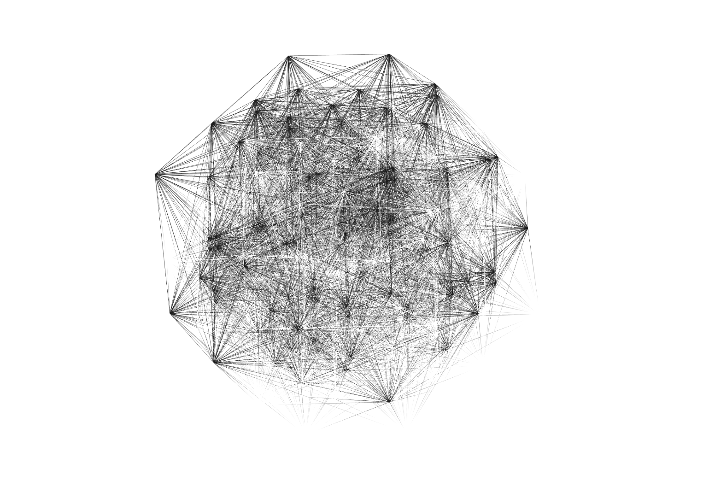

AI & BlockchainFeatured
Why Bittensor Will Win The Decentralised AI Race
An in-depth analysis of Bittensor's potential to dominate the decentralized AI landscape
Software Engineer / Writer / Guitarist / Gym Rat
I just graduated from Northeastern University in Honors Computer Science and Economics.
I'm co-founder of one of the biggest NFT collections and a trading platform as a pseudo-anon, and founder of ResMe.
I was 5x top writer on Medium, have won 5 web3 hackathons and my blogs/products have touched hundreds of thousands of users

ResMe is a resume and cover letter builder to help you best present yourself in a competitive job market. It uses AI to fastern up tedious tasks
NEU Gym Trends offers real-time insights into optimal gym times using cron jobs and a database. It features a D3.js calendar for easy scheduling and OCR for simplified data entry.
Face ID for Mac enables device unlocking via facial recognition using Python and Selenium. Bash scripts and Linux daemons optimize performance for a secure and user-friendly login experience.
Photoshop Lite is a lightweight Java Swing photo editing app with essential features. It uses the Command design pattern, OOP, and MVC architecture for a dynamic, robust, and optimized experience.